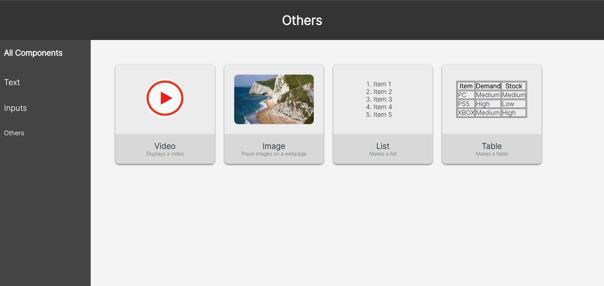
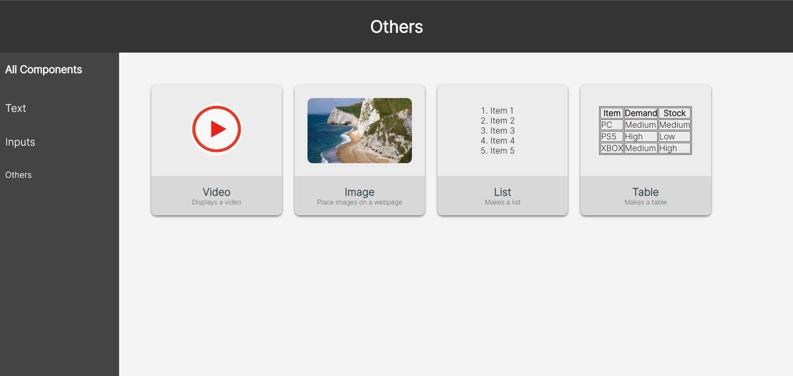

Mijn Werk
Een Component Library bevat allerlei onderdelen van een website
die steeds herbruikt kunnen worden bij het maken van nieuwe
websites.
Hierdoor kunnen developers makkelijker en sneller bepaalde
componenten in hun websites zetten die ze meerdere keren
gebruiken.
Voor mijn opleiding moesten we een component library maken waarin verschillende besproken componenten in voor komen.
Ook heb ik het gemaakt dat je kan sorteren op soort component.
Text, Inputs en Others.
 

Als je op een component klikt dan word je verwezen naar een pagina met een voorbeeld van dat component erbij.
Hierna kan je dat component kopieren naar je nieuwe website waardoor het opzetten van een website veel makkelijker.